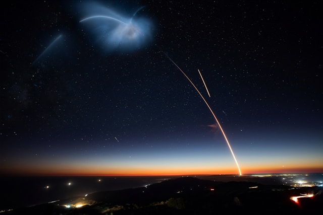

Drivstoff
Raketten går på RP-1 og flytende oksygen i begge "stages", eller steg.
Motor
Falcon 9 bruker SpaceX sin egenutviklede Merlin-motor, i to varianter:
optimalisert for atmosfærisk trykk, og optimalisert for vakuum. På første
steg av raketten, eller bæreraketten, er det ni motorer av typen for
atmosfærisk trykk. Disse har mye mindre bjeller enn den single motoren på
andre steget, som er optimalisert for vakuum.